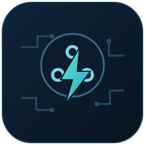

TWC Gateway — Web Flasher
Flash a Tesla Wall Connector Gen 2 controller straight from this page. No software to install.
1. Flash
Plug your ESP32 board into this computer via USB, then:
Works in desktop Chrome or Edge (Web Serial API). Not supported on Firefox, Safari, or mobile browsers — flash from a laptop/desktop instead.
2. Connect it to your network
- The freshly flashed device has no WiFi configured, so it opens its own access point named
twc-setup. Connect to it from your phone or laptop — a setup page should open automatically (or browse tohttp://192.168.4.1/if it doesn't). - Pick your WiFi network and enter its password. The device reboots and joins it.
3. Set up MQTT (optional)
- Find the device's new IP address (check your router's client list) and open it in a browser.
- Under "Text", fill in MQTT Broker, MQTT Username, and MQTT Password. The device connects immediately — no reflash or reboot needed, and it reconnects with the same settings after every future restart.
Everything the device exposes — charging current, on/off control, connection status — is also reachable directly over REST from that same web UI, with or without MQTT. See the main README for the full list of endpoints.
Before you rely on this for actual charging: the default
max_current baked into this build is a placeholder. Check it matches your circuit and breaker — see the
safety notes in the main README before treating this as a finished installation.